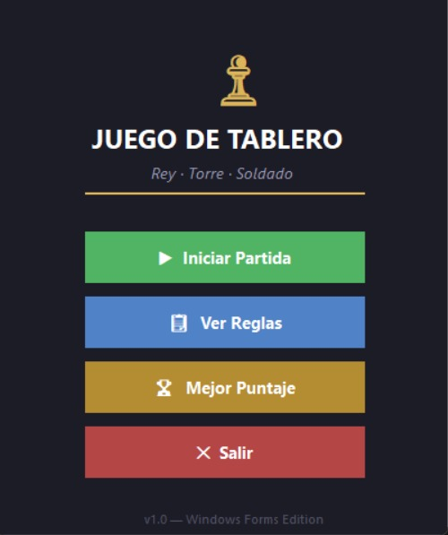
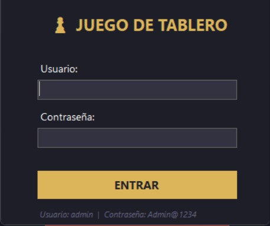
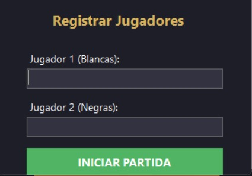
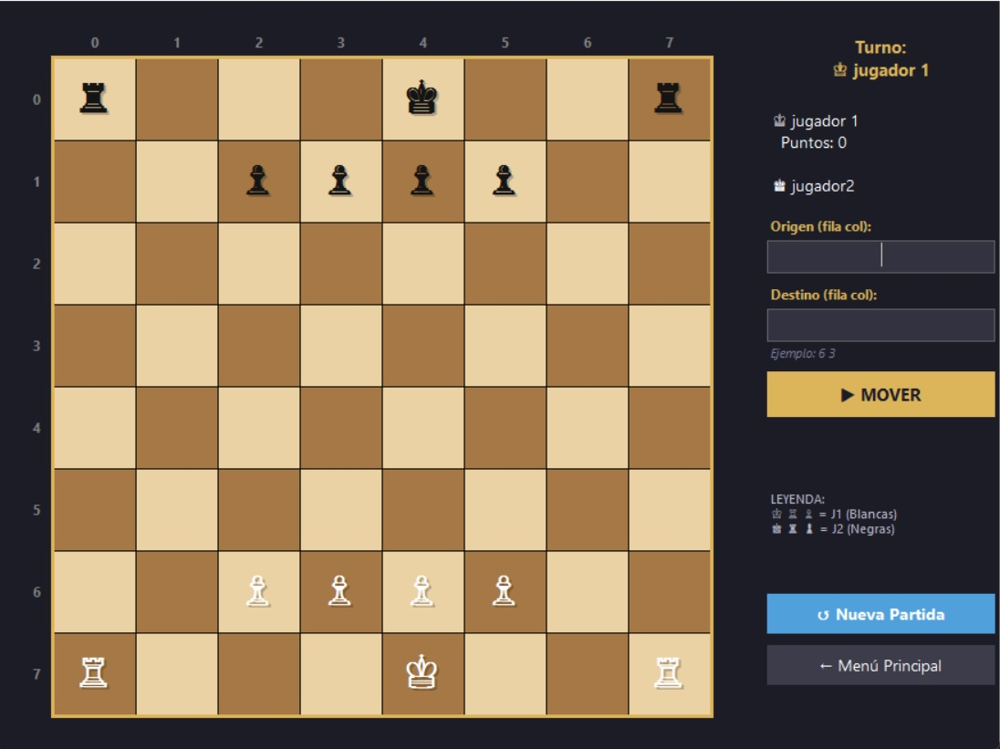
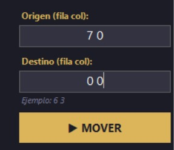
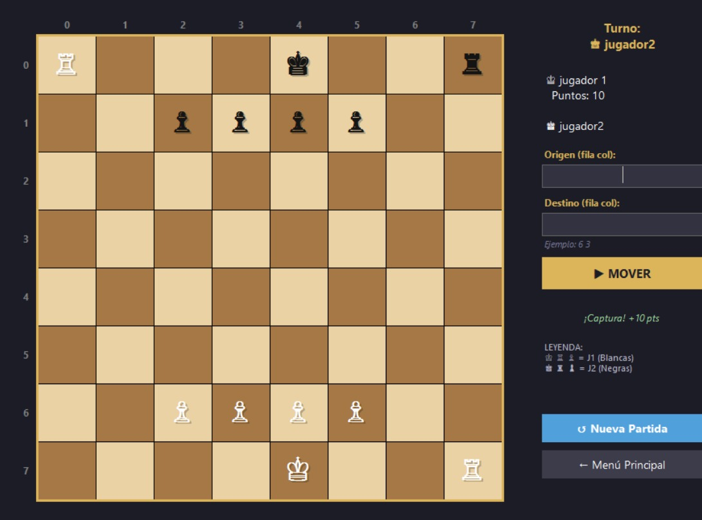
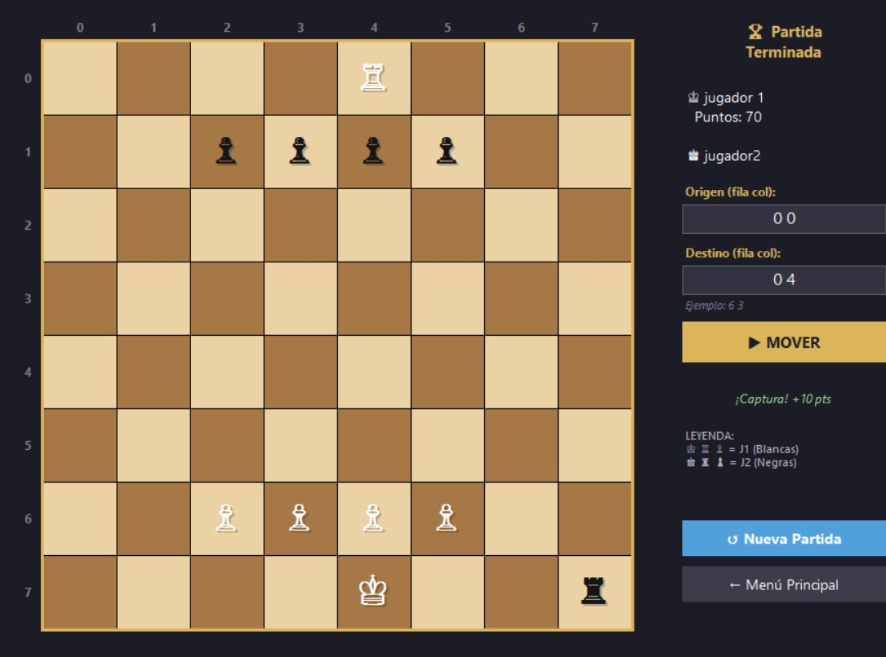
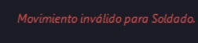
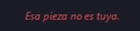

Desarrollado por estudiantes de Ingeniería en Informática y Sistemas, primer semestre — Universidad Rafael Landívar, Campus Quetzaltenango.
Se mueve en línea recta horizontal o vertical, tantas casillas como se desee, siempre que no haya piezas bloqueando el camino.
Se mueve una casilla en cualquier dirección. Es la pieza principal — la partida termina cuando el rey es capturado.
Avanza una casilla hacia adelante (dos casillas en su primer movimiento). Captura en diagonal. No puede retroceder.

para ingresar es necesario colocar usuario y contraseña en el registro
por si no lo recuerdas el usuario es:"admin" y la contraseña es "!23456789"

Para identificar a los turnos puedes registrar aqui los jugadores, el primero en registrarse sera el que juege en primer turno con las piesas blancas y el segundo jugara en segundo turno con las piesas negras.

las piesas estan repartidas en un tablero de 8x8 y enumerado de 0 a 7 puedes saber la posicion exacta con las filas y columnas.

el tablero funciona de una manera como vectorizada, es decir donde tienes que ubicarlo con cordenadas en x y y, en el juego encontraras dos paneles para poder moverte, el primero deve ser la ubicacion de donde esta tu pieza seleccionada y el segundo es el lugar a la que la puedes mover

el movimiento se realizara automaticamente y se registrara el punteo y si se comio una pieza en el movimiento ya no aparecera en el tablero

en el momento que uno de los jugadores se bloquearan los movimientos para ambos en el tablero y se registrara su puntuacion, puedes iniciar una nueva partida o ir al menu principal pero no se puede realizar mas movimientos.

si el movimiento no es valido aparecera un aviso y no se permitira que la piesa se mueva, tampoco se permitira que el turno continue.

si tratas de mover otra piesa que no es la tuya se negara el movimiento

Catedrático: Ingeniero: Manuel Rojas
Desarrollado por: